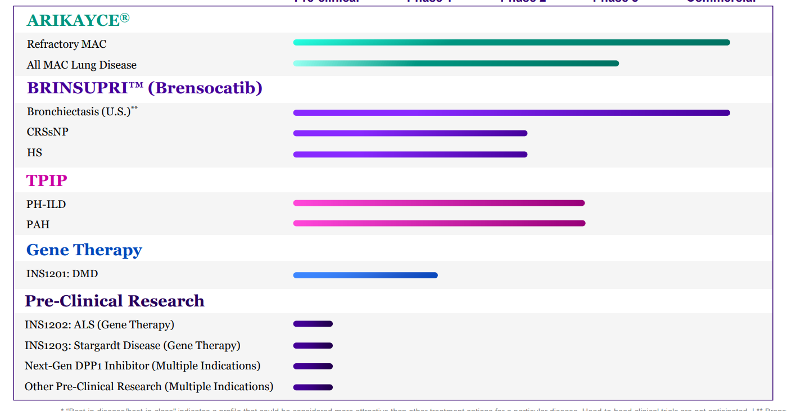

Management:
Intro to Management: I started following this company about a year ago so I do know this management team now. They are a very strong management team with solid skills at managing all aspects of the company. I have been very impressed with their management thus far. There are a few key areas of business that I think any management team has to demonstrate expertise in to build a long term winning biotech company.
Clinical Development: They need expertise at advancing drugs through the clinical development process. So far, the company has advanced Arikayce through clinical development and into commercial sales. Now, they achieved their second approval with Brinsupri in Bronchiectasis. They recently had best in class phase 2 data in PAH and PH-ILD with TPIP. That is the third successful drug in their pipeline. They also have two late stage trials ongoing for Brinspuri for HS and CRSsNP. They have a fantastic track record of winning clinical development.
Regulatory Development: They need expertise at navigating the regulatory process with the FDA. They now have two commercial drugs with Arikayce and Brinsupri. They have proven now that they can continue to build on early success by getting more drugs approved. They have several later stage programs that could be up for approval over the next few years. I now have confidence they can navigate that process.
Managing Balance Sheet: They need expertise at managing the balance sheet. This company has done an excellent job at raising funds and developing shareholder value. They raise about $700 million in cash in the second quarter bringing cash up to $1.9 billion total. They even paid down about $575 million in their convertible debt by exchanging it for stock. They raised cash and lowered debt. That is a virtuous cycle. I think they should have enough cash to get them to cash flow positive if Brinspuri grows as quickly as I think.
Commercial Sales: The final key expertise for a management team is the ability to build a successful commercial sales team. This company has demonstrated 7 years of success in selling Arikayce with revenues still growing at 23% for Q1 of 2025. They will be taking Brensocatib into commercial launch later this year which will give them a second commercial drug. Having another successful launch would validate their skill at all aspect of business management.
